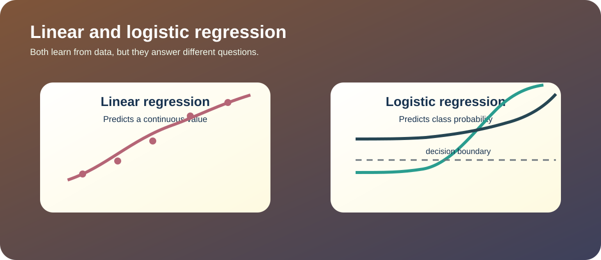
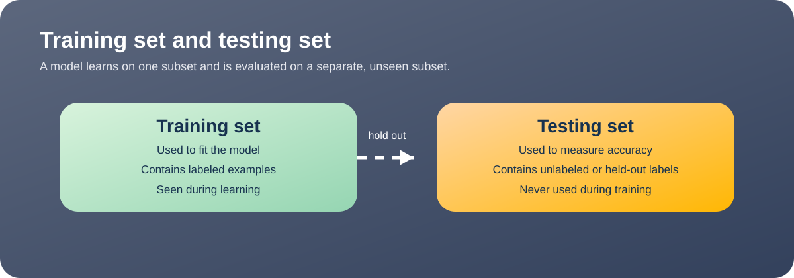
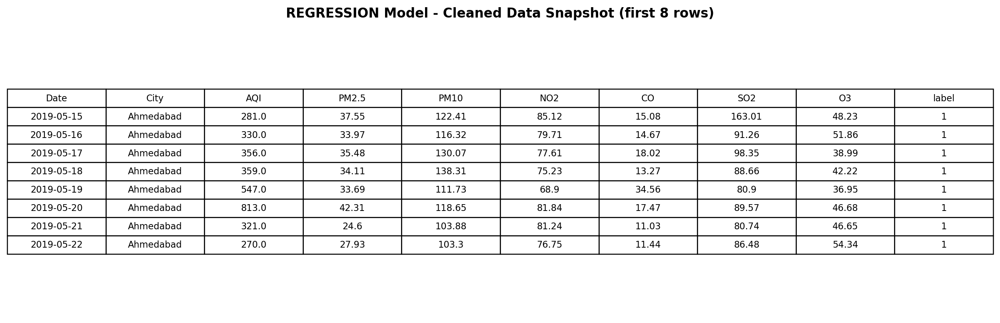
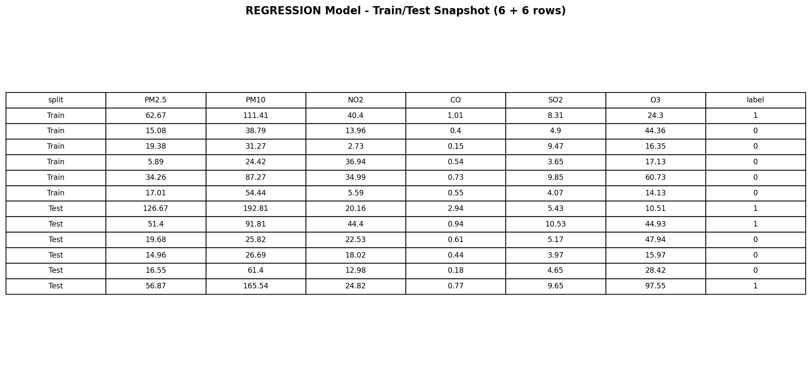
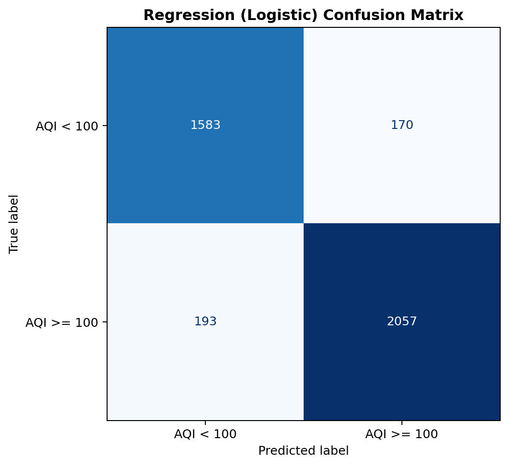

Linear regression predicts a continuous numeric outcome by fitting a line or plane that best matches the observed data. It is useful when the answer you want is a quantity, such as AQI value.
Logistic regression predicts the probability of a class and then turns that probability into a binary label. It is used when the response is categorical, such as safe versus unsafe air.
Both are linear models that learn coefficients from data. The difference is the output: one predicts a number and the other predicts a class probability.
Yes, logistic regression uses the sigmoid function to convert scores into probabilities, and maximum likelihood chooses coefficients that make the observed labels most probable.

In this project, regression is used in two ways. The written discussion explains the core ideas, while the code compares logistic regression against Naive Bayes on a binary label. That gives a useful baseline comparison between a probabilistic linear classifier and a probabilistic generative classifier.
The binary target is created with AQI >= 100, and the data is split into train and test subsets. That split must be disjoint so the accuracy reflects how the model performs on new rows instead of memorized rows.


Snapshot of cleaned data used for logistic regression modeling.

Snapshot of train and test rows used for regression model evaluation.
The Python implementation in module3_models.py compares logistic regression and Multinomial Naive Bayes on the same labels so the results can be judged side by side.
from sklearn.linear_model import LogisticRegression from sklearn.naive_bayes import MultinomialNB # The full script handles preprocessing and the train/test split. logit = LogisticRegression(max_iter=2000, random_state=42) nb = MultinomialNB()
The current run used the attached AQI dataset. Logistic regression performed slightly better than Multinomial NB on that run, which makes sense because the AQI features are continuous numeric values rather than count data.

User-friendly confusion matrix visualization for logistic regression predictions.
| Model | Accuracy | Confusion Matrix | What it predicts |
|---|---|---|---|
| Logistic Regression | 0.9093 | [[1583, 170], [193, 2057]] | Binary class probability |
| Multinomial NB | 0.6860 | [[1264, 489], [768, 1482]] | Class probability from nonnegative features |
The main comparison is that logistic regression gives the strongest binary classification result here, while Multinomial NB is much weaker on this dataset because the features are not naturally counts. That makes the pair useful for the assignment because they represent two different ways to produce a class decision.